Content Marketer. Campaign Strategist. Curious Human.
👋 I'm a writer, editor and marketer that has spent over five years creating content inside early and growth-stage B2B startups. This is my attempt to create an archive of everything I've worked on professionally. Thanks for stopping by.
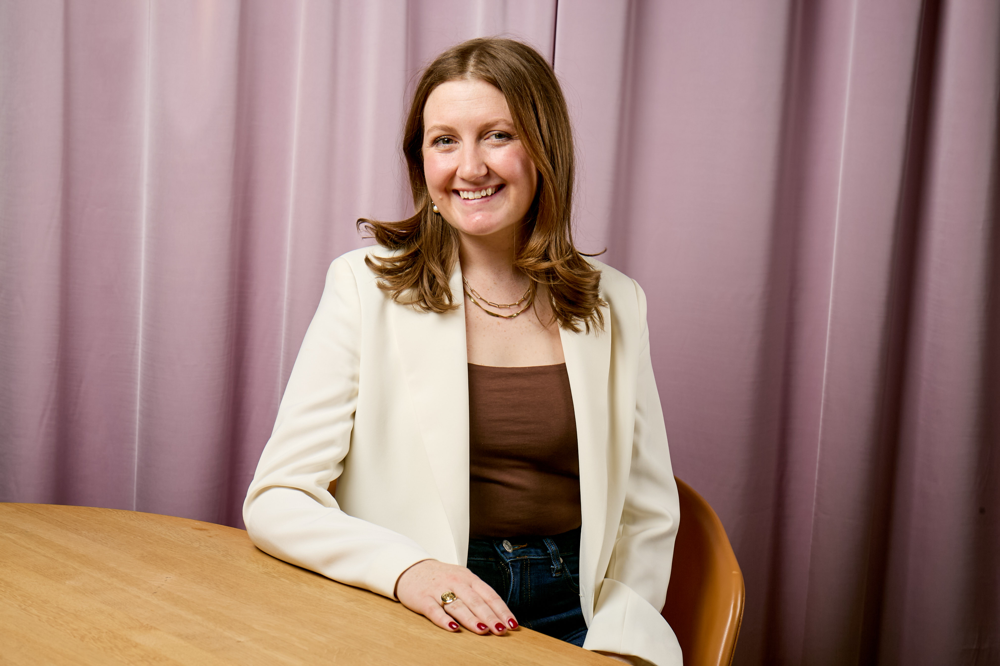
About me
Product marketing interests me because it feels like an extension of the work I've always done: start with a real customer insight, build a narrative around it, and own the distribution across channels. Every project in this portfolio started with a conversation — not a brief.
I think in full-funnel terms and I can't turn it off. "First 10 Hires" started because I built a spreadsheet auditing conversion rates across programs that weren't mine. I want to be in a role where that instinct — auditing the data, finding the gap, building the strategy, and owning the execution — is part of the job description.
I love startups because the work is directly felt. I'm from D.C., have been in NYC for five years, and I hold a dual degree in Journalism and Political Science from Mizzou. That's not an accident — I'm a reporter at heart.
Selected work
Four projects that get to the heart of how I work.
Digging up key insights → Building the narrative → Capturing the content → Owning the distribution
At Rippling, Core HR MQL-to-S1 conversion was sitting at 2.63% — well under the 33% benchmark — and nobody on the team was talking about it. I built a spreadsheet, quantified the gap, and brought it to my team unprompted. Then I made a bet: if a startup is hiring their first 10 employees, they're also ready for payroll, benefits, and a proper HRIS. Content could fix this if we met founders exactly where they were in the buying process.
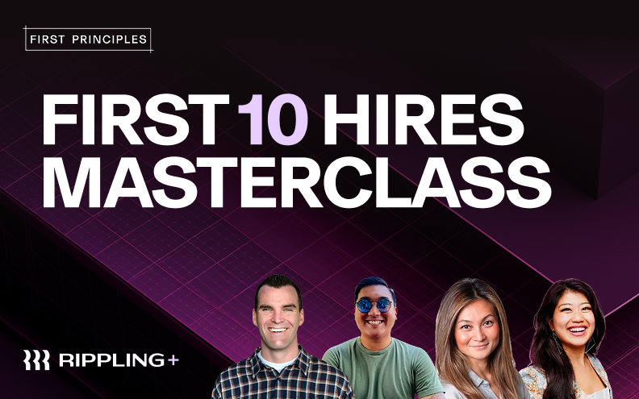
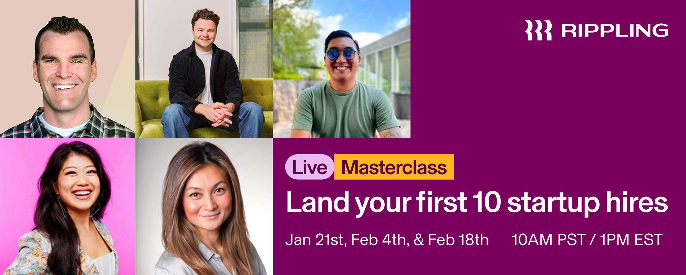
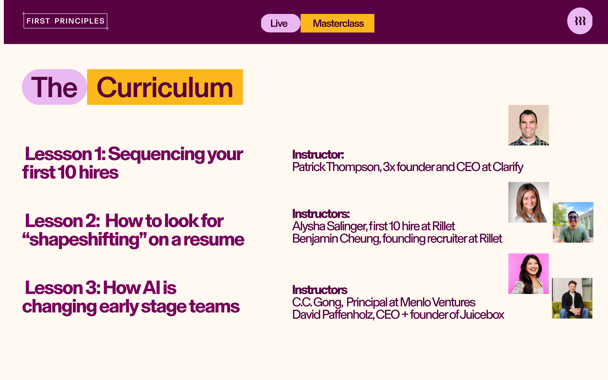
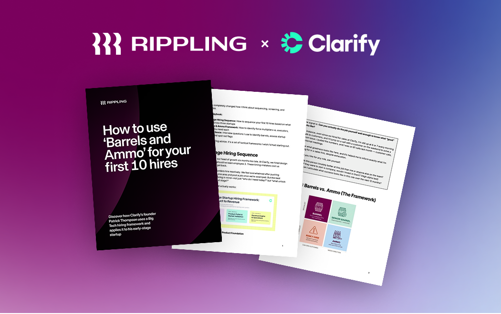
I pitched and led an interview with Cristina Cordova, COO at Linear. Halfway through, she described how Linear runs on "collapsible orgs" — fluid teams that assemble for a priority, ship, then disband. Nobody had written about this. I identified it as the narrative spine for an entire campaign. When the videos weren't landing on LinkedIn, I didn't push harder on paid. I wrote a ghost post for Cristina that delivered the insight in a format native to the platform — and it became the best-performing organic thought leader post in Rippling history.
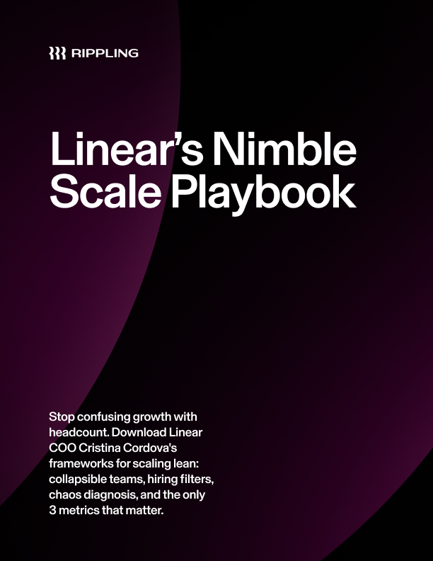
Download the playbook → · 800+ downloads, top organic VCB asset
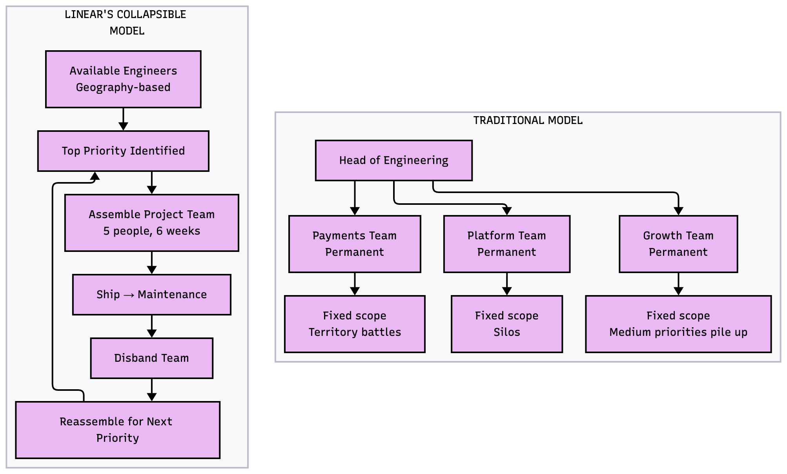
Built with Mermaid — a free, open-source diagramming tool. This chart became the visual centerpiece of Cristina's LinkedIn post. No designer needed.
Most early stage companies don't actually know how organizational structures should work. So they end up hiring wrong. I've been through so many reorgs — there's always a lot of dramatic, painful, slow work you shouldn't have to do.
At Linear, we call it a matter of running on a collapsible org. Every time we start a new priority, we assemble a small, focused team. When they ship, the team disbands and people reassemble for the next thing. No permanent silos. No territory battles.
I put together a complete guide on collapsible teams for Rippling's First Principles. Grab your copy here ↓
The insight: 50% of the top AI companies run on Rippling — but we'd never said it out loud. I designed a format that would let us say it credibly: a dual case study and thought leadership interview with Parker Conrad and the CEO of Cursor, built from the ground up for full-funnel reuse. One shoot became a blog post, a webinar, social cutdowns, paid ads, and sales collateral.
What do Cursor, Clay, Runway, Decagon and most of the Forbes AI Top 50 have in common?
They run on Rippling.
AI founders don't have time for ops debt. They're shipping. Raising. Hiring. Staying lean.
🟠 Cursor hit $500M+ ARR with no dedicated HR team. The first piece of software Cursor CEO Michael T. bought? Rippling. For a long time, he even ran payroll himself.
The next breakout AI company is already scaling on Rippling. Why not yours?
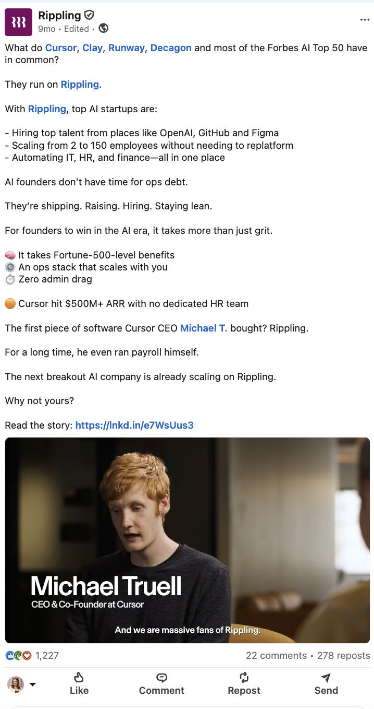
The largest campaign I've ever run — and the most strategically designed. Before I wrote a single brief, I mapped how the campaign would move through the market: which investors would seed it, which founder communities would amplify it, which executives needed custom angles to make the content platform-native. The distribution plan came first. The content followed.
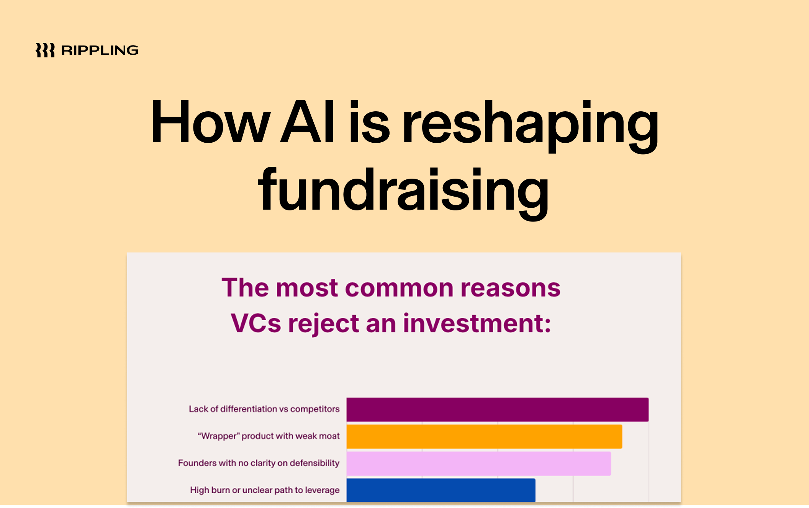
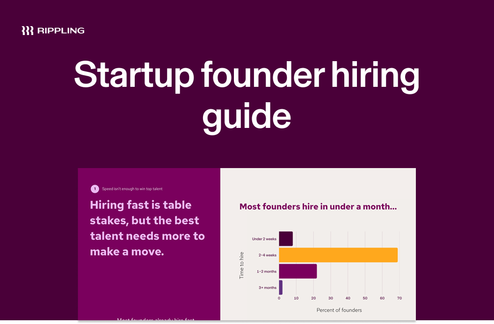
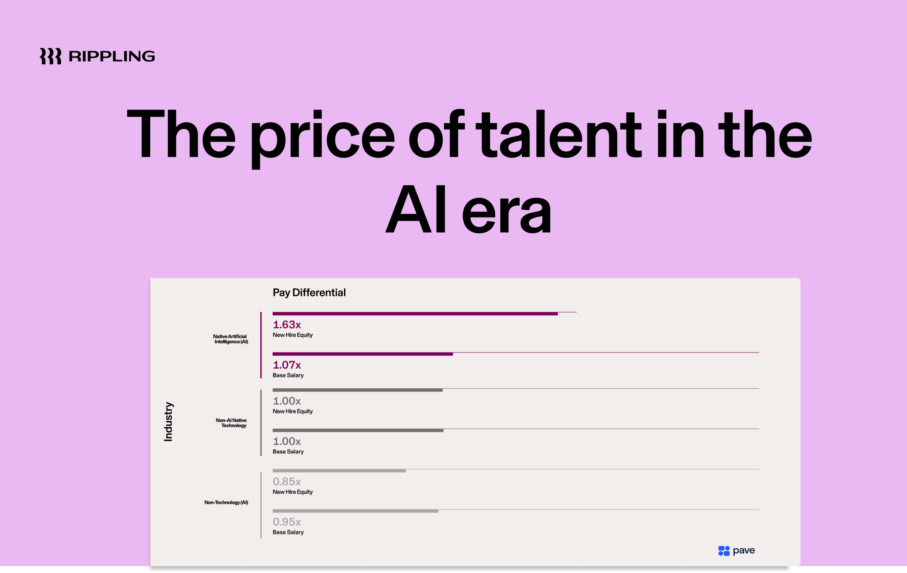
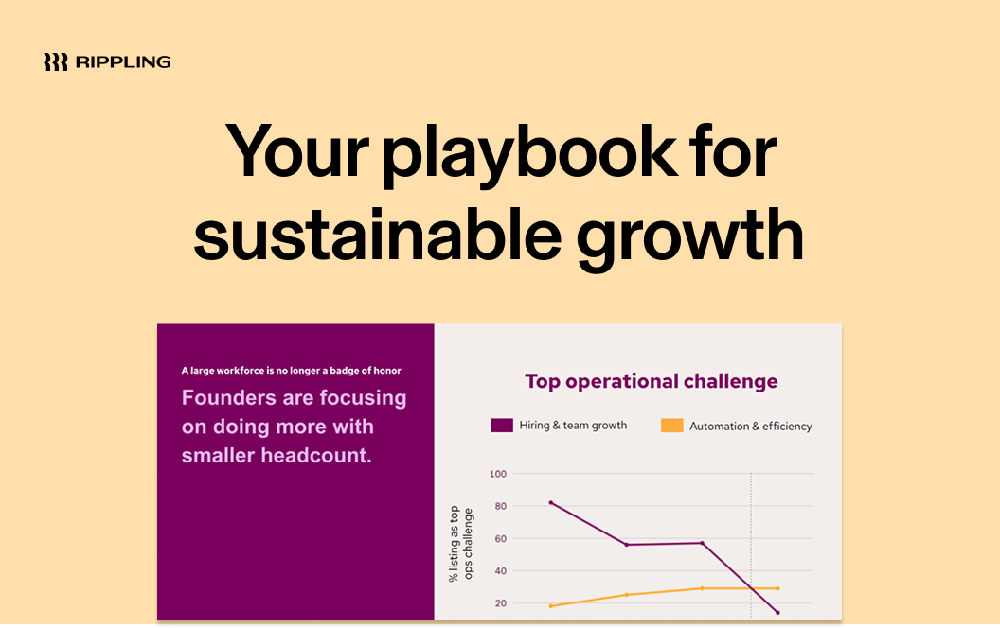
How I think
Most content plans end with "promote on social." Mine start with a map of who shares what, and why, at every stage of the funnel.
Every campaign starts with a customer conversation or a data anomaly. I rely on my background as a journalist here — asking pointed questions in prep calls, mining transcripts to find the best quotes, and observing what gets an audience riled up in the comments.
Before I record any interview, I craft questions that will yield exceptional answers for at least three different channels. What works in an infographic won't always translate to a viral YouTube short. This requires practice.
Before launch, I map the amplifiers: which investors are adjacent to the topic, which founder communities will forward it, which executives can ghost-post the insight natively. Distribution is engineered, not hoped for.
Seeded with partner-level investors in the Rippling network before any public launch — building credibility with the people who influence what founders read and trust.
Distributed through the Slack groups, forums, and newsletters where early-stage founders spend time — placing content where the conversation already lives.
Ghostwritten for Rippling execs and featured founders — same research, but repackaged as platform-native LinkedIn posts with copy governance across the full campaign.
More work
A few more projects — series work, event coverage, and the founder interview series that fed directly into bigger campaigns.
$1M ARR in 8 months. No sales team. No marketer. Just one founder posting three times a week.
Sammy Greenwall started Henry AI (YC S24) to help commercial real estate brokers generate pitch decks with AI. Today, Henry is a Rippling customer doing $1M+ ARR across 62 brokerages — and they've never hired a full-time sales or marketing person.
AI founders don't need a demand gen team. They need time back — and a repeatable way to build credibility before the product is finished.
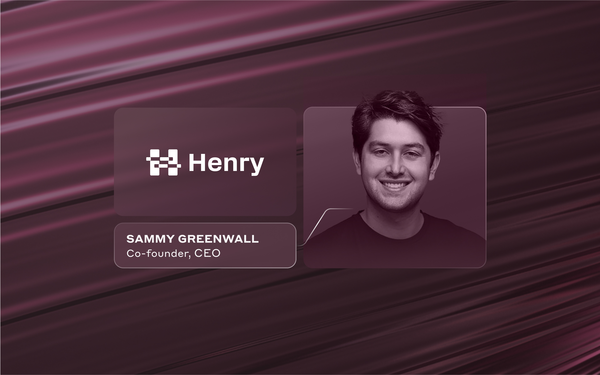